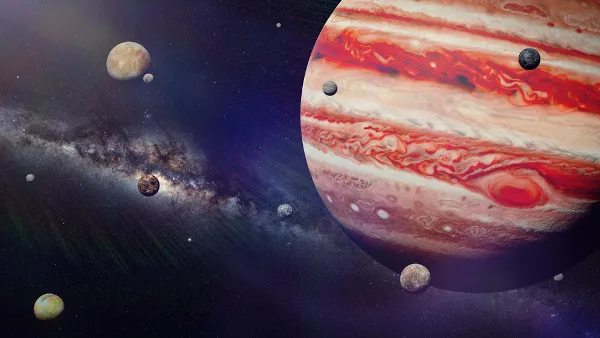
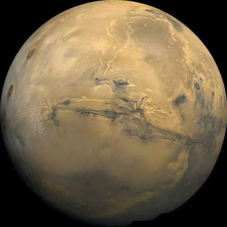
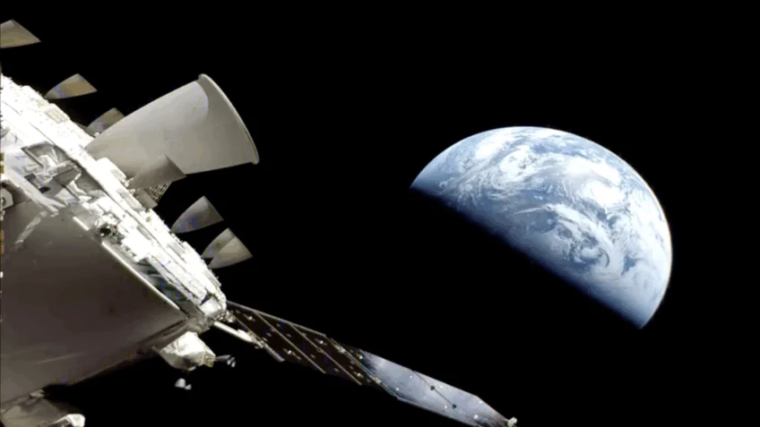
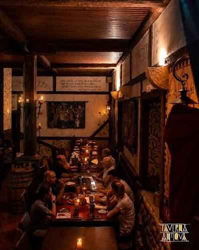

Um dia desses, monitorando o rádio telescópio do laboratório da escola, eu detetei uma frequência desconhecida trazendo uma mensagem criptografada sobre a Estação Aurora, uma base científica perdida no espaço, repleta de tecnologia avançada e segredos estelares. O sinal continha coordenadas antigas, e eu decidi pilotar a minha nave para desvendar esse mistério!

Você começa sua jornada no Sistema de Júpiter, iniciando a varredura na atmosfera da lua congelada Europa ao amanhecer cósmico para encontrar o primeiro sinal.

Na Nebulosa de Órion, você visita o movimentado Posto Comercial de Alhena. Os arquivos indicam que para localizar a entrada da estação perdida você deve procurar a próxima pista em um dos setores do posto. Por qual você começa?

Na superfície congelada de Europa, seu scanner detecta uma transmissão gravada em uma placa metálica antiga, apontando que a próxima pista está localizada no planeta desértico Marte.

Você decide que os perigos do espaço profundo são grandes demais e desliga os motores, voltando para a Terra. Mas sempre se pergunta que tecnologias teria encontrado. (Fim de jogo/Retorno)

Subornando um informante nas tavernas de Alhena, você descobre um chip de dados criptografado escondido em um terminal, apontando que a próxima pista está em Marte.
Vasculhando os hangares das docas, você encontra uma nave abandonada, mas os bancos de dados dela estão totalmente corrompidos, gerando um beco sem saída.